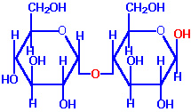
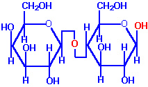
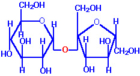
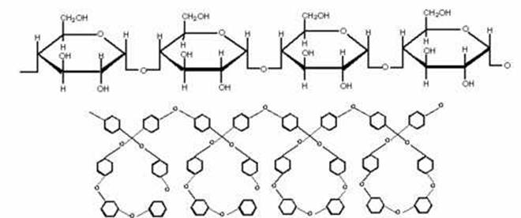
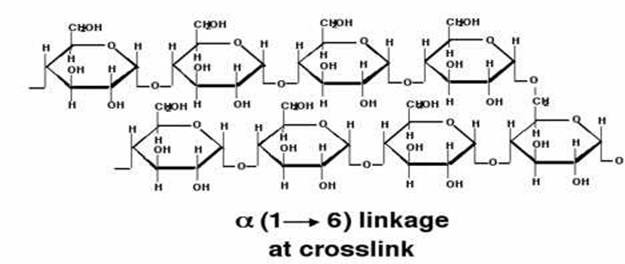
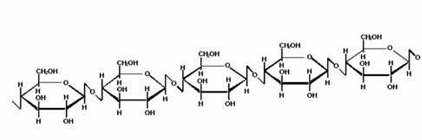

BIC 101 :: Lecture 03 :: STRUCTURE OF DISACCHARIDES & POLYSACCHARIDES

Composition, Sources and Properties of common disccharides
| Disaccharides | Constituent monosaccharides |
Linkage |
Source |
Properties |
Reducing disaccharides |
||||
Maltose |
a-D-glucose+ |
a(1à4) |
Germinating cereal and malt |
Forms osazone with phenylhydrazine. Fermentable by enzyme maltase present in yeast. Hydrolysed to two molecules of D-glucose. Undergoes mutarotation. |
Lactose |
b-D-glucose+ |
b(1à4) |
Milk. In trace amounts it can be seen in urine during pregnancy |
It shows reactions of reducing sugars including mutarotation. Decomposed by alkali. Not fermentable by yeast. Hydrolysed to one molecule of galactose and one molecule of glucose by acids and the enzyme lactase. |
Non-reducing disaccharides |
||||
Sucrose |
a-D-glucose+ |
a,b(1à2) |
Sugar beet, sugarcane, sorghum and carrot roots |
Fermentable. Hydrolysed by dilute acids or enzyme invertase (sucrase) to one molecule of glucose and one molecule of fructose. Relatively stable to reaction with dilute alkali. |
Trehalose |
a-D-glucose+ |
a,a(1à1) |
Fungi and yeast. It is stored as a reserve food supply in insect's hemolymph |
It is hydrolysable by acids to glucose with difficulty. Not hydrolysed by enzymes. |
The oligosaccharides commonly encountered in nature belong to disaccharides.
- The physiologically important disaccharides are maltose, lactose, trehalose and sucrose.
- Disaccharides consist of two monosaccharides joined covalently by an O-glycosidic bond.
- The hydroxyl group formed as a result of hemiacetal formation is highly reactive when compared to other hydroxyl groups.
- This hydroxyl group present in one monosaccharide reacts with any one of the hydroxyl groups attached to C-1, C-2, C-3, C-4, or C-6 of another monosaccharide to produce 1→1, 1→2, 1→3, 1→4, and 1→6 linked disaccharides.
- When only one anomeric carbon is involved in glycosidic bond formation, reducing disaccharides are formed.
- If both anomeric carbon atoms of monosaccharides are involved in glycosidic bond formation that results in the formation of a non-reducing disaccharides such as trehalose (aldosyl-aldosyl disaccharide) or sucrose (aldosyl-ketosyl disaccharide)'.
- In the case of reducing disaccharides, one end of the molecule having free anomeric carbon is called reducing end and the other end, where the anomeric carbon is involved in glycosidic bond, is called as non-reducing end
Reducing disaccharides
Maltose
- Maltose is a disaccharide made up of two glucose residue joined by a glycosidic linkage between C-1 of one glucose residue and C-4 of the other.
- The configuration of the anomeric carbon of glucose involved in the linkage is and hence the glycosidic linkage is (1→ 4).
- The anomeric carbon atom of the second glucose is free and therefore maltose is a reducing sugar.
- The second glucose residue is capable of existing in or configuration
- Maltose has been recorded occasionally in plants. It is usually obtained as a product of the enzyme hydrolysis of starch during germination or malting process.
 |
Maltose |
Lactose
- Lactose is a reducing disaccharide found only in milk.
- It is made up of galactose at the non-reducing end and glucose at the reducing end.
- They are connected by a (1→ 4) linkage
 |
Lactose |
Non-reducing disaccharides
Trehalose
- Trehalose, a non-reducing disaccharide., occurs as a major constituent of the circulating fluid (hemolymph) of insects and serves as an energy storage compound.
- It is also present to a limited extent in the fat body of a variety of insects.
- It gives twice the amount of energy as that of glucose and at the same time maintains the osmotic balance.
- It has been described as an important adaptation of insects engaged in flight.
- The anomeric carbons of both glucose moieties are involved in the formation of glycosidic bond.
Sucrose
- Sucrose, a sugar of commercial importance, is widely distributed in higher plants.
- Sugarcane and sugar beet are the sole commercial sources.
- It is made up of glucose and fructose.
- The anomeric carbon atom of glucose (C-1) and fructose (C-2) are involved in linkage and is therefore a non-reducing disaccharide
- Sucrose is a major intermediate product of photosynthesis and it is the principal form in which sugar is transported from the leaves to other portions of plants via their vascular systems.
 |
Sucrose |
Invert sugar
- The hydrolysis of sucrose when followed polarimetrically the optical rotation changes from positive (dextro-) to negative (levo-).
- The dextrorotatory sucrose on hydrolysis yield levorotatory mixture of glucose and fructose.
- The levorotaion is due to the presence of fructose which is by itself more levorotatory (-92) than dextrorototary glucose (+52.2).
- This phenomenon is called inversion and the mixture of glucose and fructose is called invert sugar.
- This reaction is catalysed by the enzyme invertase.
- Invert sugar is more sweeter than sucrose.
- Honey contains plenty of invert sugar and therefore is very sweet.
Sucrosyl oligosaccharides
- The degree of polymerization (DP) of sucrosyl oligosaccharides normally ranges from 3 to 9.
- Though sucrose is found at higher concentration in all plants, members of the sucrosyl oligosaccharides occur at least in traces in each plant family.
- The main accumulation of surosyl oligosaccharides is found in storage organs such as roots, rhizomes and seeds.
- The important members of sucrosyl oligosaccharides are raffinose (DP-3), stachyose (DP-4), verbascose (DP-5) and ajugose (DP-6).
- All sucrosyl oligosaccharides are non-reducing in nature .
Raffinose
- It occupies the second position next to sucrose in abundance in the plant kingdom.
- Raffinose occurs only at low concentration in the leaves of leguminous plants, but accumulates in the storage organs such as seeds and roots.
- Most of the leguminous seeds contain these oligosaccharides in large amounts.
- Bengal gram has higher amounts of raffinose.
- Red gam and green gram have significantly high amounts of verbascose and stachyose than Bengal gram and black gram.
- These sucrosyl oligosaccharides are responsible for flatulence following the consumption of these legumes.
- It serve as reserve material.
- It also contributes to frost resistance
Polysaccharides
The polysaccharides found in nature either serve a structural function (structural polysaccharides) or play a role as a stored form of energy (storage polysaccharides).
Storage polysaccharides
- Starch, galactomanans and inulin are important storage polysaccharides in plants.
Starch
- The principal food-reserve polysaccharide in the plant kingdom is starch.
- It forms the major source of carbohydrate in the human diet.
- Starch has been found in some protozoa, bacteria and algae. But the major source is plants where it occurs in the seeds, fruits, leaves, tubers and bulbs in varying amount from a few percent to over 74%.
- Starch is an alpha-glucan that has structurally distinct components called amylose and amylopectin.
- A third component referred as the intermediate fraction has also been identified in some starches.
- Starch molecules are organized into quasicrystalline macromolecular aggregates called granules.
- The shape of the granules are characteristics of the source of the starch.
- The two components, amylose and amylopectin, vary in amount among the different sources from less than 2% of amylose in waxy rice or waxy maize to about 80% amylose in amylomaize.
- The majority of starches contain 15 to 35% of amylose.
- The ratio of amylose and amylopectin is a function of the enzymes, granulosis bound starch synthase (GBSS) and soluble starch synthase (SSS).
- GBSS is able to synthesise amylose in a form that is not a substrate for branching enzyme to form amylopectin.
- Waxy mutants containing only amylopectin lack the GBSS but still contain soluble starch synthase.

- Amylose is made up of - D-glucose units linked mostly in a linear way by 4 linkages
- It has a molecular weight of 150,000 to 1,000,000 depending on its biological origin.
- It has been shown that amylose has some elements of nonlinearity.
- It consists of a mixture of linear molecules with limited, long-chain branching involving 1 -6 linkages.
- The branches contain several hundred glucose residues.
- Amylose gives a characteristic blue color with iodine due to the ability of the iodine to occupy a position in the interior of a helical coil of glucose units.
- Pure amylose binds 20% of iodine at 20C
Amylopectin

- Amylopectin is a branched, water-insoluble polymer comprised of thousands of D-glucose residues.
- The main chain of amylopectin consists of D-glucose residues joined by
(1 4) glycosidic bonds.
- Side chains of glucose residues are attached to the main chain by (16) glycosidic bonds.
- Each chain contains 15-25 glucose residues joined by (1->4) bonds.
- It contains 94-96% 14 and 4-6% - 16 linkages.
- The molecular weight of amylopectin is in the order of 107 - 108.
- Robin and co-workers have proposed a model for amylopectin
- In this model, A and B chains are linear and have degree of polymerization as 15 and 45 respectively.
- The B chain form the backbone of the amylopectin molecule and extend over two or more clusters.
- Each cluster of A chain are primarily responsible for the crystalline regions within the granule.
- The intercrystalline regions occur at regular intervals (60 - 70 A) containing the majority of - 1 - 6 linkages.
- The amylopectin molecule is 100 - 150 A in diameter and 1200-4000 A long.
- Within the granule, amylose may be located between amylopectin molecules and associated with the linear regions of the amylopectin molecule.
- Amylopectin produces a purple to red color with iodine.
Inulin
- Inulin is a non-digestible fructosyl oligosaccharide found naturally in more than 36000 types of plants.
- It is a storage polysaccharide found in onion, garlic, chicory, artichoke, asparagus, banana, wheat and rye.
- It consists of mainly,if not exclusively, of - 2->1 fructosyl-fructose links
- A starting glucose moiety can be present,but is not necessary.
- Inulin is asoluble fibre that helps maintain normal bowel function,decreases constipation,lowers cholesrerol and triglycerides.
- It is used for fat replacement and fibre enrichment in processed foods.
Structural polysaccharides
Cellulose

- Cellulose is the most abundant organic substance found in nature.
- It is the principal constituent of cell walls in higher plants.
- It occurs in almost pure form (98%) in cotton fibres and to a lessor extent in flax (80%), jute (60-70%), wood (40-50%) and cereal straws (30-43%).
- It is linear, unbranched homoglycan of 10,000 to 15,000 D-glucose units joined by -14 linkages
- The structure of cellulose can be represented as a series of glucopyranose rings in the chair conformation.
- The most stable conformation for the polymer is the chair turned 180relative to the adjacent glucose residues yielding a straight extended chain.
- Celluose molecules within the plant cell walls are organized into biological units of structure known as microfibrils.
- A microfibril consists of a bundle of cellulose molecules arranged with its long axis parallel to that of the others.
- This arrangement permits the formation of intramolecular hydrogen bonding between the hydroxyl group of C-3 of one glucose residue and the pyranose ring oxygen atom of the next glucose residue.
- This hydrogen bond impart a double bond character to the glycosidic bond and impedes the rotation of adjacent glucose residues around the glycosidic bond.
- Within the microfibril, the adjacent cellulose molecules are linked by intermolecular hydrogen bond between C-6 hydroxyl group of one molecule and the glycosidic bond oxygen atom of adjacent cellulose molecule
- The cross section of the microfibril consists of a central crystalline core of about 5–30 nm short diameters.
- The central crystalline core contains around 50-100 cellulose molecules which are arranged in perfect three dimensional array and exhibits a crystalline structure.
- Surrounding this crystalline core is a region of paracrystalline matrix which contains about 100 polysaccharide molecules of cellulose and hemicellulose
- This region does not have perfect three-dimensional order and water molecules are able to penetrate the paracrystalline region but not the crystalline core.
Chemical properties of carbohydrates
Monosaccharides
Reactions of monosaccharides are due to the presence of hydroxyl (-OH) and the potentially free aldehyde (-CHO) or keto ( >C=O) groups.
Reaction with alkali
Dilute alkali
- Sugars in weak alkaline solutions undergo isomerization to form 1,2-enediol followed by the formation of a mixture of sugars.
Strong alkali
Under strong alkaline conditions sugar undergo caramelization reactions.
Reducing property of sugars
- Sugars are classified as either reducing or non-reducing depending upon the presence of potentially free aldehyde or keto groups.
- The reducing property is mainly due to the ability of these sugars to reduce metal ions such as copper or silver to form insoluble cuprous oxide, under alkaline condition.
- The aldehyde group of aldoses is oxidized to carboxylic acid. This reducingproperty is the basis for qualitative (Fehling's, Benedict's, Barfoed's and Nylander's tests) and quantitative reactions.
- All monosaccharides are reducing. In the case of oligosaccharides, if the molecule possesses a free aldehyde or ketone group it belongs to reducing sugar (maltose and lactose).
- If the reducing groups are involved in the formation of glycosodic linkage., the sugar belongs to the non- reducing group (trehalose, sucrose, raffinose and stachyose).
Reaction with phenylhydrazine
- When reducing sugars are heated with phenylhydrazine at pH 4.7 a yellow precipitate is obtained.
- The precipitated compound is called as osazone. One molecule of reducing sugar reacts with three molecules of phenylhydrazine.
- D-mannose and D-fructose form same type of osazone as that of D-glucose since the configuration of C-3, C-4, C-5 and C-6 is same for all the three sugars.
- The osazone of D-galactose is different.
- Different sugars form osazone at different rates. For example, D-fructose forms osazone more readily than D-glucose.
- The osazones are crystalline solids with characteristic shapes, decomposition points and specific optical rotations.
- The time of formation and crystalline shape of osazone is utilized for identification of sugars.
- If methyl phenylhydrazine is used instead of phenylhydrazine in the preparation of osazone, only ketoses react.
- This reaction serves to distinguish between aldose and ketose sugars.
Reaction with acids
- Monosaccharides are generally stable to hot dilute mineral acids though ketoses are appreciably decomposed by prolonged action.
- Heating a solution of hexoses in a strong non-oxidising acidic conditions, hydroxyl methyl furfural is formed.
- The hydroxymethyl furfural from hexose is usually oxidized further to other products When phenolic compounds such as resorcinol, -naphthol or anthrone are added, mixture of coloured compounds are formed
- The molisch test used for detecting carbohydrate in solution is based on this principle.
- When conc. H2SO4 is added slowly to a carbohydrate solution containing -naphthol, a pink color is produced at the juncture.
- The heat generated during the reaction hydrolyse and dehydrate it to produce furfural or hydroxymethyl furfural which then react with -naphthol to produce the pink color.
| Download this lecture as PDF here |